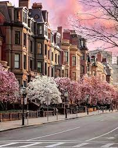
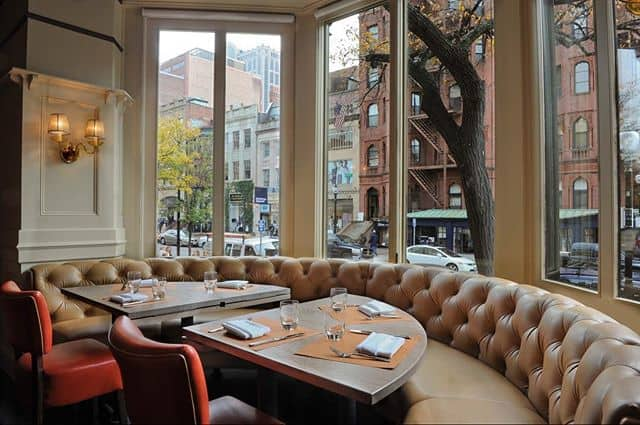
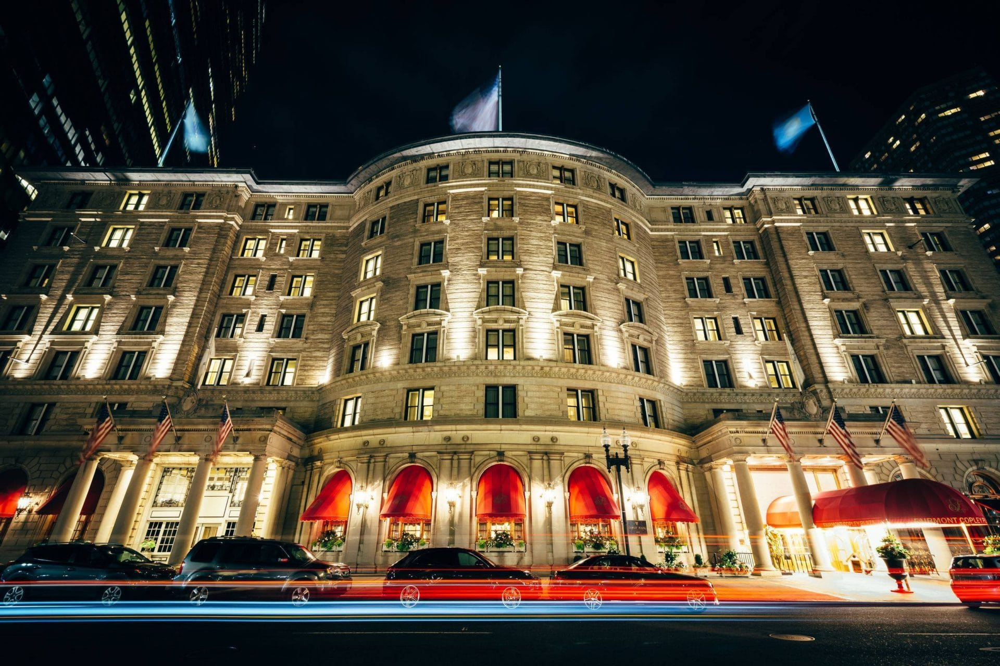
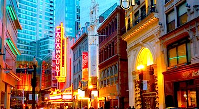

In this page I will share my recomendation about places to stay in, to eat the best food and to visit places to feel the spirit of Boston. Using my reccomandations you can plan and amke ypur perfect custom trip in this beatuful city
Places to stay
- Found Hotel Boston Common 
- Hilton Boston Park Plaza
- Fairmont Copley Plaza 
Places to eat
- No.9 Park
- Sugidama
- Celeste
Places to visit
- Freedom Trail
- Boston's Theater District 
- Tea Party Ships & Museum
Located in a beautifully restored 1877 building, FOUND Hotel Boston mixes the modern with the historic in one of the most vibrant cities on the East Coast. Steps from the Boston Common, its downtown location in the heart of the Theater District is unrivaled, letting guests explore new sights and tastes.

It has a premier Back Bay location, surrounded by shopping, dining nad entertainment. Boston Common and the Public Garden are steps away from it. It is one of Boston's most hostoric hotels.
One of the best hotels in Boston, Fairmont Copley Plaza is a luxury downtown landmark that has been a symbol of the city's rich history and elegance since its gala opening in 1912. Centrally located in Boston's historic Back Bay, our 4-diamond hotel sits steps away from area attractions including famed Fenway Park and Boston Public Library, popular downtown restaurants, and shops like the unique boutiques of Newbury Street.
Located in an elegant townhouse in Boston's historic Beacon Hill, No. 9 Park provides an intimate, European-scale setting in which to enjoy Chef Barbara Lynch's refined cuisine. The space, designed by Cheryl and Jeffrey Katz of C&J Katz, radiates a quiet and timeless elegance.
Sugidama is a traditional izakaya and soba house that offers freshly made soba, yakitori, a selection of sushi & fine sake. Sugidama is officially REOPEN at the new location 234 Elm St Somerville, MA 02144.
In 2017 Chef Paolo Celeste moved back to Salt Lake City, Utah for a new adventure, opening Celeste Ristorante bringing authentic Italian food to Murray, Utah. Chef Paolo Celeste leaned to cook from his grandmother, who worked at a restaurant in Forte dei Marmi.

For the ultimate walk through history, follow the red strip of the 2.5 mile Freedom Trail to see 16 sites important to American freedom and civil liberties. In addition to the famous Colonial and Revolutionary War sites along the Trail, you'll see other attractions closely related to America's fight for liberty such as the USS Constitution, known as "Old Ironsides," famous its role in the War of 1812. Along the way, you'll pass through several famous historic Boston neighborhoods - Beacon Hill, the North End, Charlestown. Be sure to allow time for a meal in one of the many wonderful nearby restaurants. If you love shopping, you'll want to linger in Faneuil Marketplace after you explore the Faneuil Hall on the Freedom Trail.
Boston's exciting downtown Theatre District is lined with beautifully-restored historic theaters boasting state-of-the-art performance spaces and comfortable seating. You can choose from Broadway shows, Boston Ballet performances, avant-garde productions, comedy, kids shows, and a lot more

With costumed actors, interactive displays, and high tech, the Boston Tea Party Ships & Museum gives you an all-encompassing, totally immersive experience that brings to life the time and events leading up to the American Revolution.
Watch a video and find out more about Boston and how to spend your time in this beautiful city
Resume Page
Top